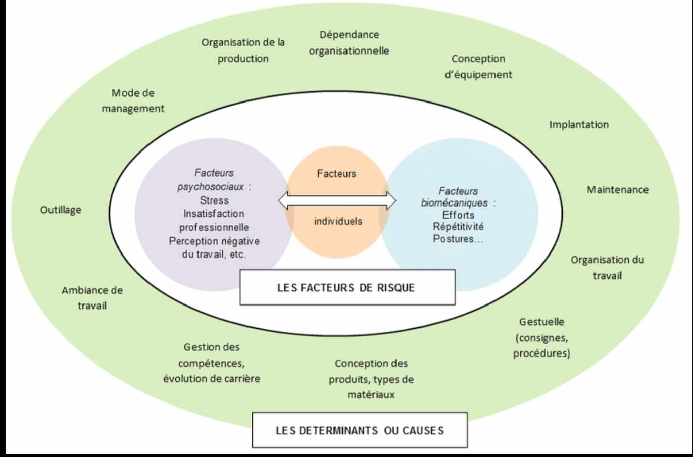
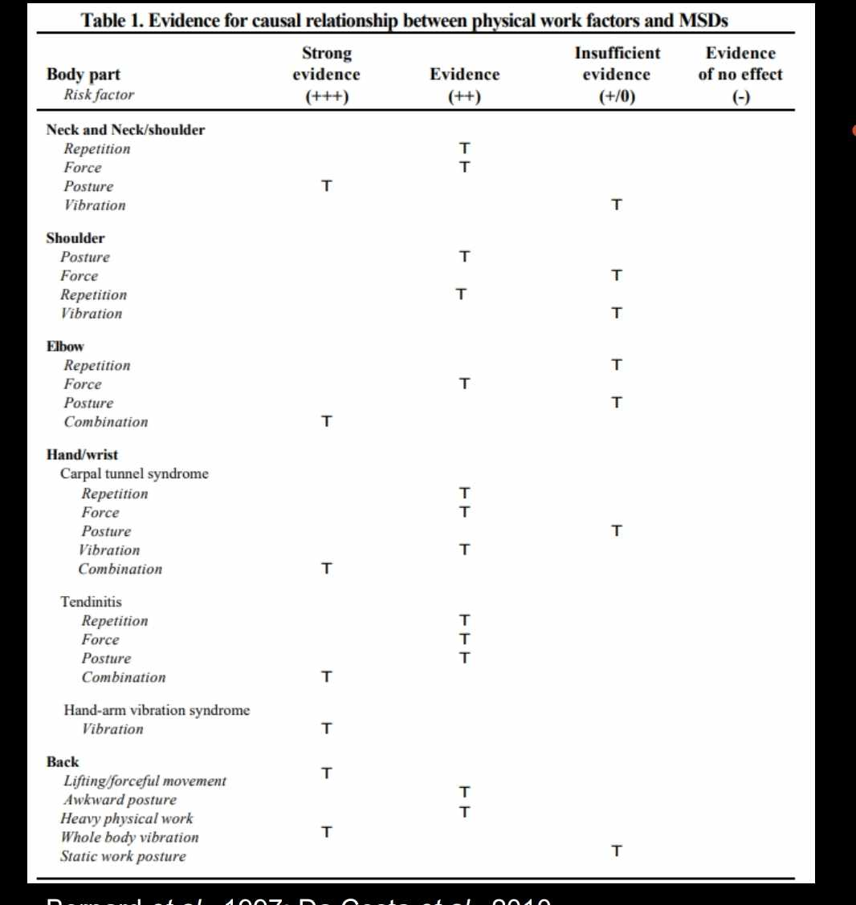
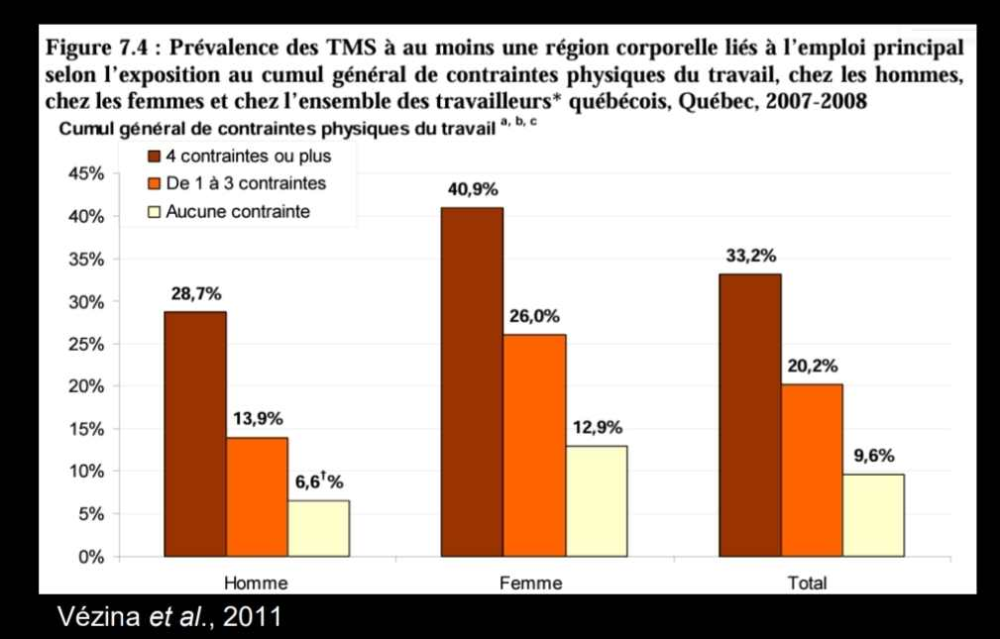

Facteurs de risque des TMS
Les TMS résultent d'une combinaison de facteurs et non pas d'une cause unique. Quatre grandes familles de facteurs interagissent : biomécaniques (directs), psychosociaux, organisationnels et individuels. Plus le nombre de facteurs simultanés est élevé, plus le risque augmente : 10 % de risque sans aucun facteur, 20 % avec 1 à 3 facteurs, 33 % avec 4 ou plus.
Table des matières
- Vue d'ensemble
- Facteurs biomécaniques
- Facteurs organisationnels
- Facteurs psychosociaux
- Facteurs individuels
- Effets cumulatifs
- Modulateurs du risque
- Application terrain
- Ressources
Vue d'ensemble

Toucher l'image pour l'agrandirQuatre familles de facteurs
| Famille | Effet | Exemple |
|---|---|---|
| Biomécaniques (physiques) | Direct (hypersollicitation) | Postures contraignantes, force, répétition, Vibrations |
| Organisationnels | Indirect (modulent les autres) | Récupération insuffisante, horaires atypiques |
| Psychosociaux | Direct et indirect | Demande élevée, faible latitude, faible soutien |
| Individuels | Susceptibilité | Âge, sexe, condition physique |
Facteurs biomécaniques
Les contraintes biomécaniques sont les facteurs de risque directs des TMS. Elles entraînent une hypersollicitation des structures anatomiques.
| Facteur | Description |
|---|---|
| Postures contraignantes | Étirement, compression ou maintien excessif |
| Répétition | Sollicitation cyclique des mêmes structures (voir Travail répétitif) |
| Travail musculaire statique | Contraction prolongée sans relâchement |
| Effort, force déployée | Charge ou force importante à vaincre |
| Vibrations | Mains-bras (outils) ou corps entier (engins) |
| Pressions mécaniques | Compression locale sur tissus mous |
| Statisme (dos) | Posture maintenue, particulièrement assise prolongée |
| Froid | Cofacteur qui réduit la circulation et augmente la raideur |
Le risque s'accroît avec l'intensité, la durée et la fréquence des expositions.

Toucher l'image pour l'agrandirLes modèles de risque sont convergents pour l'ensemble des TMS, mais l'impact relatif de chaque facteur dépend de l'articulation concernée. Les normes restent parfois arbitraires (recherches en cours sur les relations dose-effet).
Facteurs organisationnels
| Facteur | Mécanisme |
|---|---|
| Récupération insuffisante | Pauses trop courtes, fatigue cumulée |
| Absence d'alternance des tâches | Sollicitation continue des mêmes structures |
| Horaire atypique (voir Horaires de travail atypiques) | Désynchronisation, dette de sommeil |
| Absence de possibilité d'entraide | Charge non partageable |
| Cadence imposée | Pression temporelle, gestes accélérés |
| Manque de formation | Mauvaise technique perpétuée |
Effets indirects : augmentation des contraintes physiques et psychologiques. Les facteurs organisationnels sont des déterminants des activités de travail (voir Courants de l'ergonomie).
Facteurs psychosociaux
- Demande psychologique élevée.
- Faible latitude décisionnelle.
- Faible soutien social et reconnaissance.
Voir le wiki SST psychosociale frère pour le détail des modèles de Karasek et Siegrist.
Trois mécanismes par lesquels les facteurs psychosociaux contribuent aux TMS
- Augmentation de l'activité musculaire (notamment au rachis et au cou).
- Sécrétion de médiateurs chimiques (cortisol, cytokines pro-inflammatoires).
- Augmentation de l'exposition aux facteurs biomécaniques (rythme plus rapide, moins de pauses prises).
Ces facteurs contribuent donc directement et indirectement à l'apparition des TMS.
Facteurs individuels
Facteurs extraprofessionnels modulant la susceptibilité du travailleur.
| Facteur | Effet |
|---|---|
| Génétique | Prédispositions discales, ligamentaires |
| Âge | Capacité de récupération réduite |
| Sexe biologique | Variations anthropométriques et hormonales |
| Condition physique | Force, endurance musculaire |
| Statut pondéral | Charge supplémentaire sur Articulations |
| Tabagisme | Diminution de la vascularisation tissulaire |
Important : ces facteurs ne doivent jamais servir à culpabiliser le travailleur ou à justifier l'inaction sur les facteurs modifiables (biomécaniques et organisationnels).
Effets cumulatifs

Toucher l'image pour l'agrandir| Nombre de contraintes | Prévalence de TMS |
|---|---|
| Aucune | 10 % |
| 1 à 3 | 20 % |
| 4 et plus | 33 % |
Les contraintes se cumulent et se potentialisent. Une intervention efficace cible plusieurs facteurs simultanément.
Modulateurs du risque
Pour un facteur de risque donné, trois dimensions modulent le danger
| Modulateur | Description |
|---|---|
| Intensité | Plus le facteur est intense (effort grand, posture extrême), plus le risque est élevé |
| Fréquence | Nombre de fois où le facteur est présent dans un intervalle de temps donné |
| Durée | À l'intérieur d'un cycle, sur le quart, présence concomitante d'autres facteurs |
Une posture moyennement contraignante exécutée 30 fois par minute pendant 8 h est plus dangereuse qu'une posture très contraignante adoptée 3 fois par quart.
Application terrain
Le secteur minier cumule plusieurs facteurs à intensité élevée.
| Facteur | Présence en mine |
|---|---|
| Postures contraignantes | Forte (chantiers, espaces restreints, sol inégal) |
| Force et effort | Forte (manutention de pièces lourdes, écailleurs) |
| Vibrations | Très forte (jumbo, camions, chargeuses) |
| Froid | Variable (extérieur l'hiver, certains chantiers ventilés) |
| Horaires atypiques | Très forte (12 h, nuit, FIFO) |
| Faible latitude (cadences imposées, télécommande) | Modérée à forte |
Conséquence : prévalence élevée de TMS, particulièrement aux régions dorsale, cervicale, à l'épaule, au poignet et au genou.
Stratégie ergonomique en mine
- Ne jamais s'attaquer à un seul facteur. Une posture meilleure ne suffira pas si la cadence et les vibrations restent.
- Intégrer le volet psychosocial : la reconnaissance et le soutien des équipes ont un effet mesurable sur la prévalence des lombalgies.
- Mobiliser le comité paritaire SST pour la priorisation.
Ressources
| Document | Type | Source |
|---|---|---|
| Cours SST 1162 - S3 - Facteurs de risque des TMS | Cours | UQAT |
| Modèle multifactoriel des TMS | Référence | Stock et al., 2021 |
| Guide INSPQ d'évaluation des contraintes | Guide | INSPQ 2021 |
Articles wiki connexes
Pages qui pointent ici (13)
- 🏠 Wiki Ergonomie, mines Ergonomie
- 📖 Glossaire ergonomie Ergonomie
- 🚀 Démarrage rapide - Conseiller SST, ergonome Ergonomie
- 🚀 Démarrage rapide - Superviseur, contremaître Ergonomie
- Évaluation des risques de TMS Ergonomie
- Postures contraignantes Ergonomie
- Prévention des TMS Ergonomie
- Sommeil et rythmes biologiques Ergonomie
- TMS Ergonomie
- TMS (troubles musculosquelettiques) Ergonomie
- TMS par région anatomique Ergonomie
- Travail répétitif Ergonomie
- Vibrations Ergonomie